Overlapping other data
Renee Matthews
2025-06-09
Last updated: 2025-08-04
Checks: 7 0
Knit directory: ATAC_learning/
This reproducible R Markdown analysis was created with workflowr (version 1.7.1). The Checks tab describes the reproducibility checks that were applied when the results were created. The Past versions tab lists the development history.
Great! Since the R Markdown file has been committed to the Git repository, you know the exact version of the code that produced these results.
Great job! The global environment was empty. Objects defined in the global environment can affect the analysis in your R Markdown file in unknown ways. For reproduciblity it’s best to always run the code in an empty environment.
The command set.seed(20231016) was run prior to running
the code in the R Markdown file. Setting a seed ensures that any results
that rely on randomness, e.g. subsampling or permutations, are
reproducible.
Great job! Recording the operating system, R version, and package versions is critical for reproducibility.
Nice! There were no cached chunks for this analysis, so you can be confident that you successfully produced the results during this run.
Great job! Using relative paths to the files within your workflowr project makes it easier to run your code on other machines.
Great! You are using Git for version control. Tracking code development and connecting the code version to the results is critical for reproducibility.
The results in this page were generated with repository version c78b134. See the Past versions tab to see a history of the changes made to the R Markdown and HTML files.
Note that you need to be careful to ensure that all relevant files for
the analysis have been committed to Git prior to generating the results
(you can use wflow_publish or
wflow_git_commit). workflowr only checks the R Markdown
file, but you know if there are other scripts or data files that it
depends on. Below is the status of the Git repository when the results
were generated:
Ignored files:
Ignored: .RData
Ignored: .Rhistory
Ignored: .Rproj.user/
Ignored: analysis/H3K27ac_integration_noM.Rmd
Ignored: data/ACresp_SNP_table.csv
Ignored: data/ARR_SNP_table.csv
Ignored: data/All_merged_peaks.tsv
Ignored: data/CAD_gwas_dataframe.RDS
Ignored: data/CTX_SNP_table.csv
Ignored: data/Collapsed_expressed_NG_peak_table.csv
Ignored: data/DEG_toplist_sep_n45.RDS
Ignored: data/FRiP_first_run.txt
Ignored: data/Final_four_data/
Ignored: data/Frip_1_reads.csv
Ignored: data/Frip_2_reads.csv
Ignored: data/Frip_3_reads.csv
Ignored: data/Frip_4_reads.csv
Ignored: data/Frip_5_reads.csv
Ignored: data/Frip_6_reads.csv
Ignored: data/GO_KEGG_analysis/
Ignored: data/HF_SNP_table.csv
Ignored: data/Ind1_75DA24h_dedup_peaks.csv
Ignored: data/Ind1_TSS_peaks.RDS
Ignored: data/Ind1_firstfragment_files.txt
Ignored: data/Ind1_fragment_files.txt
Ignored: data/Ind1_peaks_list.RDS
Ignored: data/Ind1_summary.txt
Ignored: data/Ind2_TSS_peaks.RDS
Ignored: data/Ind2_fragment_files.txt
Ignored: data/Ind2_peaks_list.RDS
Ignored: data/Ind2_summary.txt
Ignored: data/Ind3_TSS_peaks.RDS
Ignored: data/Ind3_fragment_files.txt
Ignored: data/Ind3_peaks_list.RDS
Ignored: data/Ind3_summary.txt
Ignored: data/Ind4_79B24h_dedup_peaks.csv
Ignored: data/Ind4_TSS_peaks.RDS
Ignored: data/Ind4_V24h_fraglength.txt
Ignored: data/Ind4_fragment_files.txt
Ignored: data/Ind4_fragment_filesN.txt
Ignored: data/Ind4_peaks_list.RDS
Ignored: data/Ind4_summary.txt
Ignored: data/Ind5_TSS_peaks.RDS
Ignored: data/Ind5_fragment_files.txt
Ignored: data/Ind5_fragment_filesN.txt
Ignored: data/Ind5_peaks_list.RDS
Ignored: data/Ind5_summary.txt
Ignored: data/Ind6_TSS_peaks.RDS
Ignored: data/Ind6_fragment_files.txt
Ignored: data/Ind6_peaks_list.RDS
Ignored: data/Ind6_summary.txt
Ignored: data/Knowles_4.RDS
Ignored: data/Knowles_5.RDS
Ignored: data/Knowles_6.RDS
Ignored: data/LiSiLTDNRe_TE_df.RDS
Ignored: data/MI_gwas.RDS
Ignored: data/SNP_GWAS_PEAK_MRC_id
Ignored: data/SNP_GWAS_PEAK_MRC_id.csv
Ignored: data/SNP_gene_cat_list.tsv
Ignored: data/SNP_supp_schneider.RDS
Ignored: data/TE_info/
Ignored: data/TFmapnames.RDS
Ignored: data/all_TSSE_scores.RDS
Ignored: data/all_four_filtered_counts.txt
Ignored: data/aln_run1_results.txt
Ignored: data/anno_ind1_DA24h.RDS
Ignored: data/anno_ind4_V24h.RDS
Ignored: data/annotated_gwas_SNPS.csv
Ignored: data/background_n45_he_peaks.RDS
Ignored: data/cardiac_muscle_FRIP.csv
Ignored: data/cardiomyocyte_FRIP.csv
Ignored: data/col_ng_peak.csv
Ignored: data/cormotif_full_4_run.RDS
Ignored: data/cormotif_full_4_run_he.RDS
Ignored: data/cormotif_full_6_run.RDS
Ignored: data/cormotif_full_6_run_he.RDS
Ignored: data/cormotif_probability_45_list.csv
Ignored: data/cormotif_probability_45_list_he.csv
Ignored: data/cormotif_probability_all_6_list.csv
Ignored: data/cormotif_probability_all_6_list_he.csv
Ignored: data/datasave.RDS
Ignored: data/embryo_heart_FRIP.csv
Ignored: data/enhancer_list_ENCFF126UHK.bed
Ignored: data/enhancerdata/
Ignored: data/filt_Peaks_efit2.RDS
Ignored: data/filt_Peaks_efit2_bl.RDS
Ignored: data/filt_Peaks_efit2_n45.RDS
Ignored: data/first_Peaksummarycounts.csv
Ignored: data/first_run_frag_counts.txt
Ignored: data/full_bedfiles/
Ignored: data/gene_ref.csv
Ignored: data/gwas_1_dataframe.RDS
Ignored: data/gwas_2_dataframe.RDS
Ignored: data/gwas_3_dataframe.RDS
Ignored: data/gwas_4_dataframe.RDS
Ignored: data/gwas_5_dataframe.RDS
Ignored: data/high_conf_peak_counts.csv
Ignored: data/high_conf_peak_counts.txt
Ignored: data/high_conf_peaks_bl_counts.txt
Ignored: data/high_conf_peaks_counts.txt
Ignored: data/hits_files/
Ignored: data/hyper_files/
Ignored: data/hypo_files/
Ignored: data/ind1_DA24hpeaks.RDS
Ignored: data/ind1_TSSE.RDS
Ignored: data/ind2_TSSE.RDS
Ignored: data/ind3_TSSE.RDS
Ignored: data/ind4_TSSE.RDS
Ignored: data/ind4_V24hpeaks.RDS
Ignored: data/ind5_TSSE.RDS
Ignored: data/ind6_TSSE.RDS
Ignored: data/initial_complete_stats_run1.txt
Ignored: data/left_ventricle_FRIP.csv
Ignored: data/median_24_lfc.RDS
Ignored: data/median_3_lfc.RDS
Ignored: data/mergedPeads.gff
Ignored: data/mergedPeaks.gff
Ignored: data/motif_list_full
Ignored: data/motif_list_n45
Ignored: data/motif_list_n45.RDS
Ignored: data/multiqc_fastqc_run1.txt
Ignored: data/multiqc_fastqc_run2.txt
Ignored: data/multiqc_genestat_run1.txt
Ignored: data/multiqc_genestat_run2.txt
Ignored: data/my_hc_filt_counts.RDS
Ignored: data/my_hc_filt_counts_n45.RDS
Ignored: data/n45_bedfiles/
Ignored: data/n45_files
Ignored: data/other_papers/
Ignored: data/peakAnnoList_1.RDS
Ignored: data/peakAnnoList_2.RDS
Ignored: data/peakAnnoList_24_full.RDS
Ignored: data/peakAnnoList_24_n45.RDS
Ignored: data/peakAnnoList_3.RDS
Ignored: data/peakAnnoList_3_full.RDS
Ignored: data/peakAnnoList_3_n45.RDS
Ignored: data/peakAnnoList_4.RDS
Ignored: data/peakAnnoList_5.RDS
Ignored: data/peakAnnoList_6.RDS
Ignored: data/peakAnnoList_Eight.RDS
Ignored: data/peakAnnoList_full_motif.RDS
Ignored: data/peakAnnoList_n45_motif.RDS
Ignored: data/siglist_full.RDS
Ignored: data/siglist_n45.RDS
Ignored: data/summarized_peaks_dataframe.txt
Ignored: data/summary_peakIDandReHeat.csv
Ignored: data/test.list.RDS
Ignored: data/testnames.txt
Ignored: data/toplist_6.RDS
Ignored: data/toplist_full.RDS
Ignored: data/toplist_full_DAR_6.RDS
Ignored: data/toplist_n45.RDS
Ignored: data/trimmed_seq_length.csv
Ignored: data/unclassified_full_set_peaks.RDS
Ignored: data/unclassified_n45_set_peaks.RDS
Ignored: data/xstreme/
Untracked files:
Untracked: RNA_seq_integration.Rmd
Untracked: Rplot.pdf
Untracked: Sig_meta
Untracked: analysis/.gitignore
Untracked: analysis/Cormotif_analysis_testing diff.Rmd
Untracked: analysis/Diagnosis-tmm.Rmd
Untracked: analysis/Expressed_RNA_associations.Rmd
Untracked: analysis/IF_counts_20x.Rmd
Untracked: analysis/Jaspar_motif_DAR_paper.Rmd
Untracked: analysis/LFC_corr.Rmd
Untracked: analysis/SVA.Rmd
Untracked: analysis/Tan2020.Rmd
Untracked: analysis/making_master_peaks_list.Rmd
Untracked: analysis/my_hc_filt_counts.csv
Untracked: code/Concatenations_for_export.R
Untracked: code/IGV_snapshot_code.R
Untracked: code/LongDARlist.R
Untracked: code/just_for_Fun.R
Untracked: my_plot.pdf
Untracked: my_plot.png
Untracked: output/cormotif_probability_45_list.csv
Untracked: output/cormotif_probability_all_6_list.csv
Untracked: setup.RData
Unstaged changes:
Modified: ATAC_learning.Rproj
Modified: analysis/AC_shared_analysis.Rmd
Modified: analysis/AF_HF_SNPs.Rmd
Modified: analysis/Cardiotox_SNPs.Rmd
Modified: analysis/Cormotif_analysis.Rmd
Modified: analysis/DEG_analysis.Rmd
Modified: analysis/GO_analysis_DAR_paper.Rmd
Modified: analysis/H3K27ac_initial_QC.Rmd
Modified: analysis/H3K27ac_integration.Rmd
Modified: analysis/H3K27ac_integration_adj.Rmd
Modified: analysis/Jaspar_motif.Rmd
Modified: analysis/Jaspar_motif_ff.Rmd
Modified: analysis/SNP_TAD_peaks.Rmd
Modified: analysis/TE_analysis_norm.Rmd
Modified: analysis/final_four_analysis.Rmd
Note that any generated files, e.g. HTML, png, CSS, etc., are not included in this status report because it is ok for generated content to have uncommitted changes.
These are the previous versions of the repository in which changes were
made to the R Markdown (analysis/Top2B_analysis.Rmd) and
HTML (docs/Top2B_analysis.html) files. If you’ve configured
a remote Git repository (see ?wflow_git_remote), click on
the hyperlinks in the table below to view the files as they were in that
past version.
| File | Version | Author | Date | Message |
|---|---|---|---|---|
| Rmd | c78b134 | reneeisnowhere | 2025-08-04 | updates |
| html | d6904a9 | reneeisnowhere | 2025-07-22 | Build site. |
| Rmd | 2c7543c | reneeisnowhere | 2025-07-22 | first commit |
library(tidyverse)
library(kableExtra)
library(broom)
library(RColorBrewer)
library(ChIPseeker)
library("TxDb.Hsapiens.UCSC.hg38.knownGene")
library("org.Hs.eg.db")
library(rtracklayer)
library(edgeR)
library(ggfortify)
library(limma)
library(readr)
library(BiocGenerics)
library(gridExtra)
library(VennDiagram)
library(scales)
library(BiocParallel)
library(ggpubr)
library(devtools)
library(biomaRt)
library(eulerr)
library(smplot2)
library(genomation)
library(ggsignif)
library(plyranges)
library(ggrepel)
library(epitools)
library(circlize)
library(readxl)
library(regioneR)
library(GenomicRanges)
library(gwascat)
library(liftOver)Loading in dataframes
toptable_results <- readRDS("data/Final_four_data/re_analysis/Toptable_results.RDS")
all_results <- toptable_results %>%
imap(~ .x %>% tibble::rownames_to_column(var = "rowname") %>%
mutate(source = .y)) %>%
bind_rows()
Top2b_peaks <- import(con="data/other_papers/ChIP3_TOP2B_CM_87-1.bed",format = "bed",genome="hg38")
Motif_list_gr <- readRDS( "data/Final_four_data/re_analysis/Motif_list_granges.RDS")
list2env(Motif_list_gr,envir = .GlobalEnv)<environment: R_GlobalEnv>df_list <- plyr::llply(Motif_list_gr[c(1:9)], as.data.frame)
list2env(df_list,envir=.GlobalEnv)<environment: R_GlobalEnv>Left_ventricle <- import(con = "C://Users/renee/Downloads/hg38.TADs/hg38/VentricleLeft_STL003_Leung_2015-raw_TADs.txt", format = "bed",genome="hg38")
DOX_3_sig_gr <-
all_results %>%
dplyr::select(source,genes, logFC,adj.P.Val) %>%
mutate("Peakid"=genes) %>%
dplyr::filter(source=="DOX_3") %>%
dplyr::filter(adj.P.Val<0.05) %>%
separate_wider_delim(., cols="genes",names = c("seqnames","start","end"), delim= ".") %>%
GRanges()
DOX_24_sig_gr <-
all_results %>%
dplyr::select(source,genes, logFC,adj.P.Val) %>%
mutate("Peakid"=genes) %>%
dplyr::filter(source=="DOX_24") %>%
dplyr::filter(adj.P.Val<0.05) %>%
separate_wider_delim(., cols="genes",names = c("seqnames","start","end"), delim= ".") %>%
GRanges()
# mrc_lookup <- bind_rows(
# (EAR_open %>% dplyr::select(Peakid) %>% mutate(mrc = "EAR_open")),
# (EAR_close %>% dplyr::select(Peakid) %>%mutate(mrc = "EAR_close")),
# (ESR_open %>% dplyr::select(Peakid) %>%mutate(mrc = "ESR_open")),
# (ESR_close %>% dplyr::select(Peakid) %>%mutate(mrc = "ESR_close")),
# (ESR_opcl %>% dplyr::select(Peakid) %>%mutate(mrc = "ESR_opcl")),
# (ESR_clop %>% dplyr::select(Peakid) %>%mutate(mrc = "ESR_clop")),
# (LR_open %>% dplyr::select(Peakid) %>%mutate(mrc = "LR_open")),
# (LR_close %>% dplyr::select(Peakid) %>%mutate(mrc = "LR_close")),
# (NR %>% dplyr::select(Peakid) %>%mutate(mrc = "NR"))
# ) %>%
# distinct(Peakid, mrc)
MCF7_DARs_hyper <- read_excel("C:/Users/renee/Downloads/MCF7-doxATAC/Table 4.XLSX",
sheet = "hyper") %>% GRanges()
MCF7_DARs_hypo <- read_excel("C:/Users/renee/Downloads/MCF7-doxATAC/Table 4.XLSX",
sheet = "hypo") %>% GRanges()
MCF7_ARsmcf7_1 <- read_excel("C:/Users/renee/Downloads/MCF7-doxATAC/Table 3.XLSX") %>%
GRanges()
MCF7_DARs_hyper$names <- paste0("hyper_", seq_along(seqnames(MCF7_DARs_hyper)))
MCF7_DARs_hypo$names <- paste0("hypo_", seq_along(seqnames(MCF7_DARs_hypo)))
MCF7_DAR_all <- c(MCF7_DARs_hyper,MCF7_DARs_hypo)ch = import.chain("C:/Users/renee/ATAC_folder/liftOver_genome/hg19ToHg38.over.chain")
MCF7_ARsmcf7_1_LO <- as.data.frame(liftOver(MCF7_ARsmcf7_1,ch)) %>%
GRanges()
MCF7_DARs_hyper_LO <- as.data.frame(liftOver(MCF7_DARs_hyper,ch)) %>%
GRanges()
MCF7_DARs_hypo_LO <- as.data.frame(liftOver(MCF7_DARs_hypo,ch)) %>%
GRanges()
MCF7_DAR_all <- c(MCF7_DARs_hyper_LO,MCF7_DARs_hypo_LO)Overlapping Top2b and all ATAC regions
Allregion_ol <- join_overlap_intersect(all_regions,Top2b_peaks)%>%
as.data.frame() %>%
distinct(Peakid,.keep_all = TRUE)
left_ventricle_ol <- join_overlap_intersect(all_regions ,Left_ventricle) %>%
as.data.frame() %>%
distinct(Peakid,.keep_all = TRUE)
MCF7_AR_ol <- join_overlap_intersect(all_regions, MCF7_ARsmcf7_1_LO)
MCF7_hyper_ol <- join_overlap_intersect(all_regions, MCF7_DARs_hyper_LO)
MCF7_hypo_ol <- join_overlap_intersect(all_regions, MCF7_DARs_hypo_LO)
MCF7_DAR_all_ol <- join_overlap_intersect(all_regions, MCF7_DAR_all)
DOX_MCF7_DARS_ol <- join_overlap_intersect(DOX_24_sig_gr, MCF7_DAR_all)
TOP2b_overlap <- join_overlap_intersect(all_regions,Top2b_peaks)%>%
as.data.frame() %>%
distinct(name,.keep_all = TRUE)
join_overlap_intersect(all_regions,Top2b_peaks)%>%
as.data.frame() %>%
group_by(Peakid) %>%
tally() %>%
dplyr::filter(n>1
)# A tibble: 53 × 2
Peakid n
<chr> <int>
1 chr1.146036537.146039554 2
2 chr1.149885328.149888835 2
3 chr1.211577628.211580059 2
4 chr1.214550778.214552606 2
5 chr1.245153192.245155983 2
6 chr1.58782274.58784820 2
7 chr1.64469685.64471782 2
8 chr1.81800022.81803825 2
9 chr1.998987.1000942 2
10 chr10.102643701.102646882 2
# ℹ 43 more rowsProportion of Tob2b peaks found in ATAC peak by treatment:
annotated_regions <- all_results %>%
dplyr::filter(source=="DOX_3"|source=="DOX_24") %>%
dplyr::select(source,genes,logFC,adj.P.Val) %>%
pivot_wider(.,id_cols=genes,names_from = source, values_from = c(logFC, adj.P.Val)) %>%
mutate(top_2b_ol=case_when(genes %in% Allregion_ol$Peakid~"TOP2b_peak",
TRUE ~"not_TOP2b_peak")) %>%
mutate(sig_3=if_else(adj.P.Val_DOX_3<0.05,"sig","not_sig"),
sig_24=if_else(adj.P.Val_DOX_24<0.05,"sig","not_sig")) %>%
mutate(sig_3=factor(sig_3,levels=c("sig","not_sig")),
sig_24=factor(sig_24,levels=c("sig","not_sig"))) %>%
# left_join(., mrc_lookup, by =c("genes"="Peakid")) %>%
# mutate(mrc=tidyr::replace_na(mrc, "not_mrc")) %>%
mutate(TAD_ol=case_when(genes%in% left_ventricle_ol$Peakid~"TAD_peak",
TRUE ~"not_TAD_peak")) %>%
mutate(MCF7_AR=case_when(genes %in% MCF7_AR_ol$Peakid~"MCF7AR_peak",
TRUE ~"not_MCF7AR_peak")) %>%
mutate(MCF7_hyper=case_when(genes %in% MCF7_hyper_ol$Peakid~"MCF7hyper_peak",
TRUE ~"not_MCF7hyper_peak")) %>%
mutate(MCF7_hypo=case_when(genes %in% MCF7_hypo_ol$Peakid~"MCF7hypo_peak",
TRUE ~"not_MCF7hypo_peak"))
annotated_regions %>%
group_by(sig_3,top_2b_ol) %>% tally%>%
pivot_wider(., id_cols = sig_3, names_from = top_2b_ol, values_from = n)# A tibble: 2 × 3
# Groups: sig_3 [2]
sig_3 TOP2b_peak not_TOP2b_peak
<fct> <int> <int>
1 sig 185 3288
2 not_sig 5036 147048annotated_regions %>%
group_by(sig_24,top_2b_ol) %>% tally %>%
pivot_wider(., id_cols = sig_24, names_from = top_2b_ol, values_from = n)# A tibble: 2 × 3
# Groups: sig_24 [2]
sig_24 TOP2b_peak not_TOP2b_peak
<fct> <int> <int>
1 sig 1772 63048
2 not_sig 3449 87288# annotated_regions %>%
# group_by(mrc,top_2b_ol) %>% tally %>%
# pivot_wider(., id_cols = mrc, names_from = top_2b_ol, values_from = n)
annotated_regions %>%
group_by(sig_3,top_2b_ol) %>% tally%>%
pivot_wider(., id_cols = sig_3, names_from = top_2b_ol, values_from = n) %>%
column_to_rownames("sig_3") %>%
as.matrix() %>%
chisq.test(.)
Pearson's Chi-squared test with Yates' continuity correction
data: .
X-squared = 41.903, df = 1, p-value = 9.59e-11annotated_regions %>%
group_by(sig_24,top_2b_ol) %>% tally%>%
pivot_wider(., id_cols = sig_24, names_from = top_2b_ol, values_from = n) %>%
column_to_rownames("sig_24") %>%
as.matrix() %>%
chisq.test(.)
Pearson's Chi-squared test with Yates' continuity correction
data: .
X-squared = 132.47, df = 1, p-value < 2.2e-16# annotated_regions %>%
# group_by(mrc,TAD_ol) %>% tally%>%
# pivot_wider(., id_cols = mrc, names_from = TAD_ol, values_from = n)
annotated_regions %>%
group_by(TAD_ol, top_2b_ol) %>% tally%>%
pivot_wider(., id_cols = c( top_2b_ol), names_from = TAD_ol, values_from = n)# A tibble: 2 × 3
top_2b_ol TAD_peak not_TAD_peak
<chr> <int> <int>
1 TOP2b_peak 4491 730
2 not_TOP2b_peak 136159 14177annotated_regions %>%
group_by(sig_3,top_2b_ol) %>%
ggplot(., aes(x=sig_3, fill=top_2b_ol))+
geom_bar(position="fill")+
theme_bw()+
ggtitle(" 3 hour DARs and TOP2b")+
ylab("proportion")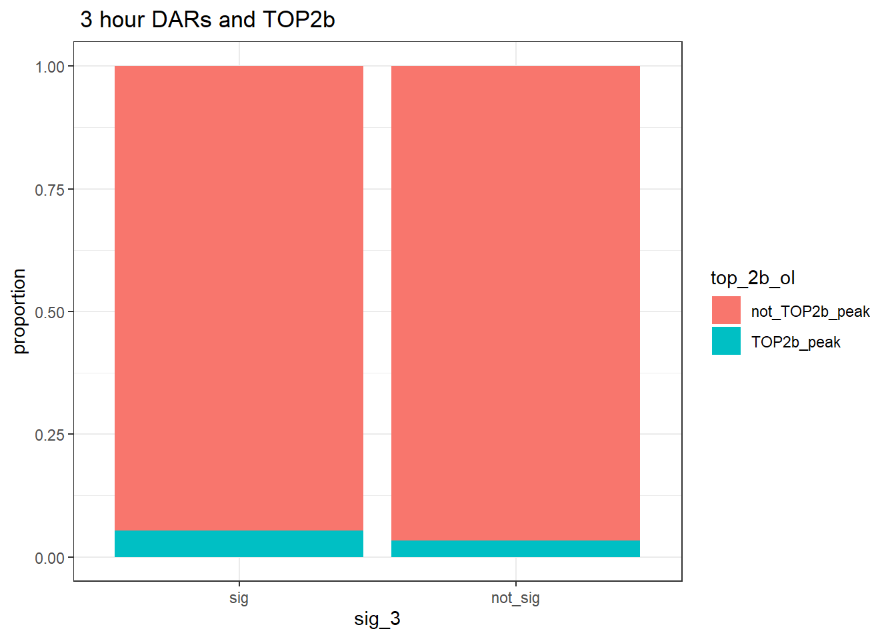
| Version | Author | Date |
|---|---|---|
| d6904a9 | reneeisnowhere | 2025-07-22 |
annotated_regions %>%
group_by(sig_24,top_2b_ol) %>%
ggplot(., aes(x=sig_24, fill=top_2b_ol))+
geom_bar(position="fill")+
theme_bw()+
ggtitle(" 24 hour DARs and TOP2b")+
ylab("proportion")
| Version | Author | Date |
|---|---|---|
| d6904a9 | reneeisnowhere | 2025-07-22 |
top2b_3hr_or <- annotated_regions %>%
group_by(sig_3,top_2b_ol) %>%
tally %>%
pivot_wider(., id_cols=sig_3, names_from = top_2b_ol, values_from = n) %>%
column_to_rownames("sig_3") %>%
as.matrix() %>%
epitools::oddsratio(., method="wald")
top2b_24hr_or <- annotated_regions %>%
group_by(sig_24,top_2b_ol) %>%
tally %>%
pivot_wider(., id_cols=sig_24, names_from = top_2b_ol, values_from = n) %>%
column_to_rownames("sig_24") %>%
as.matrix() %>%
epitools::oddsratio(., method="wald")
ggplot_format_odds <- data.frame("or_value" = c(top2b_3hr_or$measure[2, "estimate"],top2b_24hr_or$measure[2, "estimate"]),
"lower_ci" = c(top2b_3hr_or$measure[2, "lower"],top2b_24hr_or$measure[2, "lower"]),
"upper_ci" = c(top2b_3hr_or$measure[2, "upper"],top2b_24hr_or$measure[2, "upper"]),
"p_value" = c(top2b_3hr_or$p.value[2,"chi.square"],top2b_24hr_or$p.value[2,"chi.square"]),
group=c("3hour","24hour"))
ggplot_format_odds %>%
mutate(group=factor(group, levels= c("3hour","24hour"))) %>%
ggplot(., aes(x = group, y = or_value)) +
geom_point(size = 3) +
geom_errorbar(aes(ymin = lower_ci, ymax = upper_ci), width = 0.2) +
geom_hline(yintercept = 1, linetype = "dashed", color = "gray40") +
labs(
title = "Odds Ratio of TOP2b Peak Overlap",
y = "Odds Ratio (95% confidence interval)",
x = "time"
) +
theme_bw() +
theme(
text = element_text(size = 12),
plot.title = element_text(hjust = 0.5)
)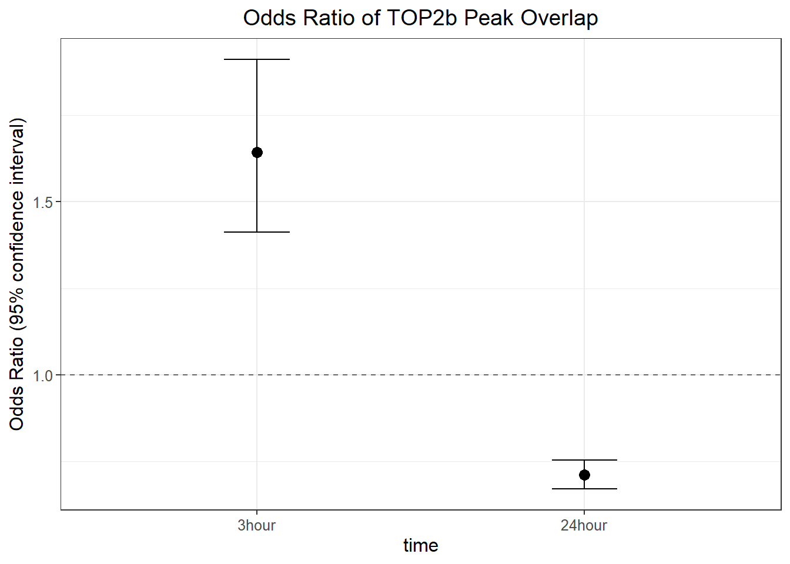
| Version | Author | Date |
|---|---|---|
| d6904a9 | reneeisnowhere | 2025-07-22 |
annotated_DARs<- readRDS("data/Final_four_data/re_analysis/DOX_DAR_annotated_peaks_chipannno.RDS")
gene_N_peak <-
annotated_DARs$DOX_3 %>%
as.data.frame() %>%
dplyr::select(mcols.genes,annotation, geneId:distanceToTSS)
toplistall_RNA <- readRDS("data/other_papers/toplistall_RNA.RDS") %>%
mutate(logFC = logFC*(-1))
RNA_results <-
toplistall_RNA %>%
dplyr::select(time:logFC) %>%
tidyr::unite("sample",time, id) %>%
pivot_wider(., id_cols = c(ENTREZID,SYMBOL),names_from = sample, values_from = logFC) %>%
rename_with(~ str_replace(., "hours", "RNA"))
RNA_adj.pvals <-
toplistall_RNA %>%
dplyr::select(time:SYMBOL,adj.P.Val) %>%
tidyr::unite("sample",id, time) %>%
pivot_wider(., id_cols = c(ENTREZID,SYMBOL),names_from = sample, values_from = adj.P.Val) %>%
rename_with(~ str_replace(., "hours", "pval"))my_DOX_data <- all_results %>%
dplyr::filter(source=="DOX_3"|source=="DOX_24") %>%
dplyr::select(source,genes,logFC,adj.P.Val) %>%
pivot_wider(.,id_cols=genes,names_from = source, values_from = c(logFC, adj.P.Val))
my_EPI_data <- all_results %>%
dplyr::filter(source=="EPI_3"|source=="EPI_24") %>%
dplyr::select(source,genes,logFC,adj.P.Val) %>%
pivot_wider(.,id_cols=genes,names_from = source, values_from = c(logFC, adj.P.Val))
my_DNR_data <- all_results %>%
dplyr::filter(source=="DNR_3"|source=="DNR_24") %>%
dplyr::select(source,genes,logFC,adj.P.Val) %>%
pivot_wider(.,id_cols=genes,names_from = source, values_from = c(logFC, adj.P.Val))
my_MTX_data <- all_results %>%
dplyr::filter(source=="MTX_3"|source=="MTX_24") %>%
dplyr::select(source,genes,logFC,adj.P.Val) %>%
pivot_wider(.,id_cols=genes,names_from = source, values_from = c(logFC, adj.P.Val))adding DOX_sig and other trts for enrichment with top2b
TSS_listed_df <- annotated_regions %>%
# mutate(DOX_sig_3=if_else(adj.P.Val_DOX_3<0.05,"sig","not_sig"),
# DOX_sig_24=if_else(adj.P.Val_DOX_24<0.05,"sig","not_sig")) %>%
# mutate(DOX_sig_3=factor(DOX_sig_3,levels=c("sig","not_sig")),
# DOX_sig_24=factor(DOX_sig_24,levels=c("sig","not_sig"))) %>%
left_join(.,my_EPI_data,by=c("genes"="genes")) %>%
mutate(EPI_sig_3=if_else(adj.P.Val_EPI_3<0.05,"sig","not_sig"),
EPI_sig_24=if_else(adj.P.Val_EPI_24<0.05,"sig","not_sig")) %>%
mutate(EPI_sig_3=factor(EPI_sig_3,levels=c("sig","not_sig")),
EPI_sig_24=factor(EPI_sig_24,levels=c("sig","not_sig"))) %>%
left_join(.,my_DNR_data,by=c("genes"="genes")) %>%
mutate(DNR_sig_3=if_else(adj.P.Val_DNR_3<0.05,"sig","not_sig"),
DNR_sig_24=if_else(adj.P.Val_DNR_24<0.05,"sig","not_sig")) %>%
mutate(DNR_sig_3=factor(DNR_sig_3,levels=c("sig","not_sig")),
DNR_sig_24=factor(DNR_sig_24,levels=c("sig","not_sig"))) %>%
left_join(.,my_MTX_data,by=c("genes"="genes")) %>%
mutate(MTX_sig_3=if_else(adj.P.Val_MTX_3<0.05,"sig","not_sig"),
MTX_sig_24=if_else(adj.P.Val_MTX_24<0.05,"sig","not_sig")) %>%
mutate(MTX_sig_3=factor(MTX_sig_3,levels=c("sig","not_sig")),
MTX_sig_24=factor(MTX_sig_24,levels=c("sig","not_sig"))) %>%
dplyr::rename("DOX_sig_3"=sig_3, "DOX_sig_24"= sig_24) %>%
left_join(., gene_N_peak, by= c("genes"="mcols.genes"))make the odds ratio dataframe
DOX_top2b_3hr_or <-
TSS_listed_df %>%
group_by(DOX_sig_3,top_2b_ol) %>%
tally %>%
pivot_wider(., id_cols=DOX_sig_3, names_from = top_2b_ol, values_from = n) %>% column_to_rownames("DOX_sig_3") %>%
as.matrix() %>%
fisher.test(.)
DOX_top2b_24hr_or <- TSS_listed_df %>%
group_by(DOX_sig_24,top_2b_ol) %>%
tally %>%
pivot_wider(., id_cols=DOX_sig_24, names_from = top_2b_ol, values_from = n) %>%
column_to_rownames("DOX_sig_24") %>%
as.matrix() %>%
fisher.test(.)
EPI_top2b_3hr_or <-
TSS_listed_df %>%
group_by(EPI_sig_3,top_2b_ol) %>%
tally %>%
pivot_wider(., id_cols=EPI_sig_3, names_from = top_2b_ol, values_from = n) %>% column_to_rownames("EPI_sig_3") %>%
as.matrix() %>%
fisher.test(.)
EPI_top2b_24hr_or <- TSS_listed_df %>%
group_by(EPI_sig_24,top_2b_ol) %>%
tally %>%
pivot_wider(., id_cols=EPI_sig_24, names_from = top_2b_ol, values_from = n) %>%
column_to_rownames("EPI_sig_24") %>%
as.matrix() %>%
fisher.test(.)
DNR_top2b_3hr_or <-
TSS_listed_df %>%
group_by(DNR_sig_3,top_2b_ol) %>%
tally %>%
pivot_wider(., id_cols=DNR_sig_3, names_from = top_2b_ol, values_from = n) %>% column_to_rownames("DNR_sig_3") %>%
as.matrix() %>%
fisher.test(.)
DNR_top2b_24hr_or <- TSS_listed_df %>%
group_by(DNR_sig_24,top_2b_ol) %>%
tally %>%
pivot_wider(., id_cols=DNR_sig_24, names_from = top_2b_ol, values_from = n) %>%
column_to_rownames("DNR_sig_24") %>%
as.matrix() %>%
fisher.test(.)
MTX_top2b_3hr_or <-
TSS_listed_df %>%
group_by(MTX_sig_3,top_2b_ol) %>%
tally %>%
pivot_wider(., id_cols=MTX_sig_3, names_from = top_2b_ol, values_from = n) %>% column_to_rownames("MTX_sig_3") %>%
as.matrix() %>%
fisher.test(.)
MTX_top2b_24hr_or <- TSS_listed_df %>%
group_by(MTX_sig_24,top_2b_ol) %>%
tally %>%
pivot_wider(., id_cols=MTX_sig_24, names_from = top_2b_ol, values_from = n) %>%
column_to_rownames("MTX_sig_24") %>%
as.matrix() %>%
fisher.test(.)
# ggplot_format_odds <- data.frame("or_value" = c(top2b_3hr_or$measure[2, "estimate"],top2b_24hr_or$measure[2, "estimate"]),
# "lower_ci" = c(top2b_3hr_or$measure[2, "lower"],top2b_24hr_or$measure[2, "lower"]),
# "upper_ci" = c(top2b_3hr_or$measure[2, "upper"],top2b_24hr_or$measure[2, "upper"]),
# "p_value" = c(top2b_3hr_or$p.value[2,"chi.square"],top2b_24hr_or$p.value[2,"chi.square"]),
# group=c("3hour","24hour"))# Define the variable names
var_names <- c("DOX_top2b_3hr_or", "DOX_top2b_24hr_or",
"EPI_top2b_3hr_or", "EPI_top2b_24hr_or",
"DNR_top2b_3hr_or", "DNR_top2b_24hr_or",
"MTX_top2b_3hr_or", "MTX_top2b_24hr_or")
# Optional: label for grouping
group_labels <- c("DOX_3hr", "DOX_24hr", "EPI_3hr", "EPI_24hr", "DNR_3hr", "DNR_24hr", "MTX_3hr", "MTX_24hr")
# Build the data frame
OR_all_trt_result_df <- do.call(rbind, lapply(seq_along(var_names), function(i) {
var <- get(var_names[i])
data.frame(
or_value = unname(var$estimate), # remove the name "odds ratio"
lower_ci = var$conf.int[1],
upper_ci = var$conf.int[2],
p_value = var$p.value,
group = group_labels[i]
)
}))OR_all_trt_result_df %>%
separate_wider_delim(.,cols="group", names = c("trt","time"), delim = "_",cols_remove = FALSE) %>%
mutate(time= factor(time, levels =c("3hr","24hr")),
trt=factor(trt, levels= c("DOX", "EPI", "DNR", "MTX"))) %>%
# mutate(significant=if_else(p_value <0.05,"TRUE","FALSE")) %>%
mutate(
significant = case_when(
p_value < 0.001 ~ "***",
p_value < 0.01 ~ "**",
p_value < 0.05 ~ "*",
TRUE ~ ""
)
) %>%
ggplot(., aes(x = trt, y = or_value)) +
geom_point(aes(color = trt), size=4)+
geom_errorbar(aes(ymin = lower_ci, ymax = upper_ci), width = 0.2) +
geom_hline(yintercept = 1, linetype = "dashed", color = "gray40") +
geom_text(
aes(y = upper_ci + 0.1 * or_value, label = significant),
hjust = 0, # aligns text to the left of the y point
size = 4,
color = "black"
)+
labs(
title = "Odds Ratio of TOP2b Peak Overlap",
y = "Odds Ratio (95% confidence interval)",
x = "treatment"
) +
# coord_flip()+
theme_classic() +
facet_wrap(~time)+
theme(
text = element_text(size = 12),
plot.title = element_text(hjust = 0.5)
)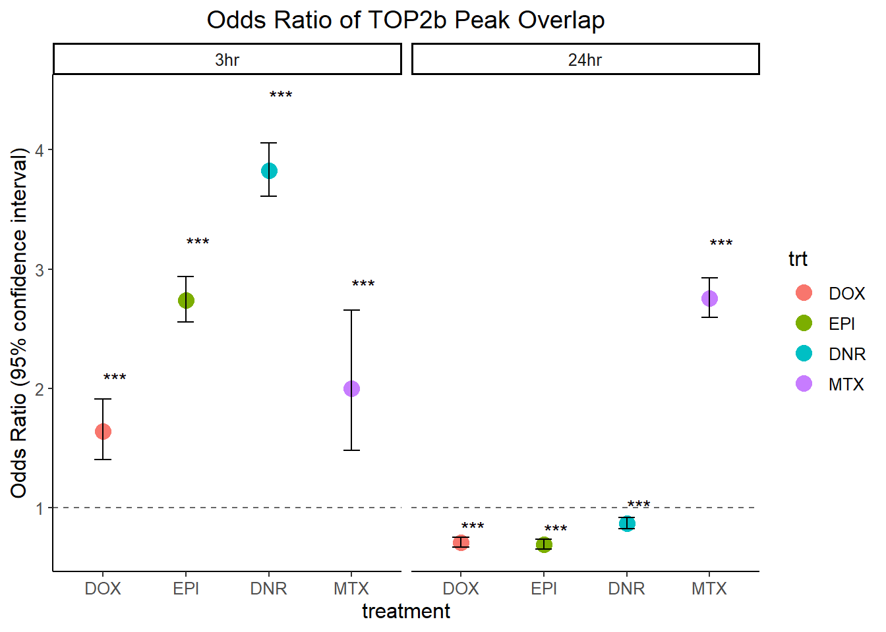
| Version | Author | Date |
|---|---|---|
| d6904a9 | reneeisnowhere | 2025-07-22 |
top2b_overlap <- join_overlap_inner(all_regions,Top2b_peaks)
AR_total <- length(unique(all_regions$Peakid))
Top2B_total <- length(unique(Top2b_peaks$name))
overlap_n <- length(unique(top2b_overlap$Peakid))
fit_top2b <- euler(c(
"ARs" = AR_total-overlap_n,
"Top2B" = Top2B_total-length(unique(top2b_overlap$name)),
"ARs&Top2B" = overlap_n
))
plot(fit_top2b, fills = list(fill = c("skyblue", "lightcoral"), alpha = 0.6),
labels = FALSE, edges = TRUE, quantities = TRUE,
main = "Overlap between AR and TOP2B peaks")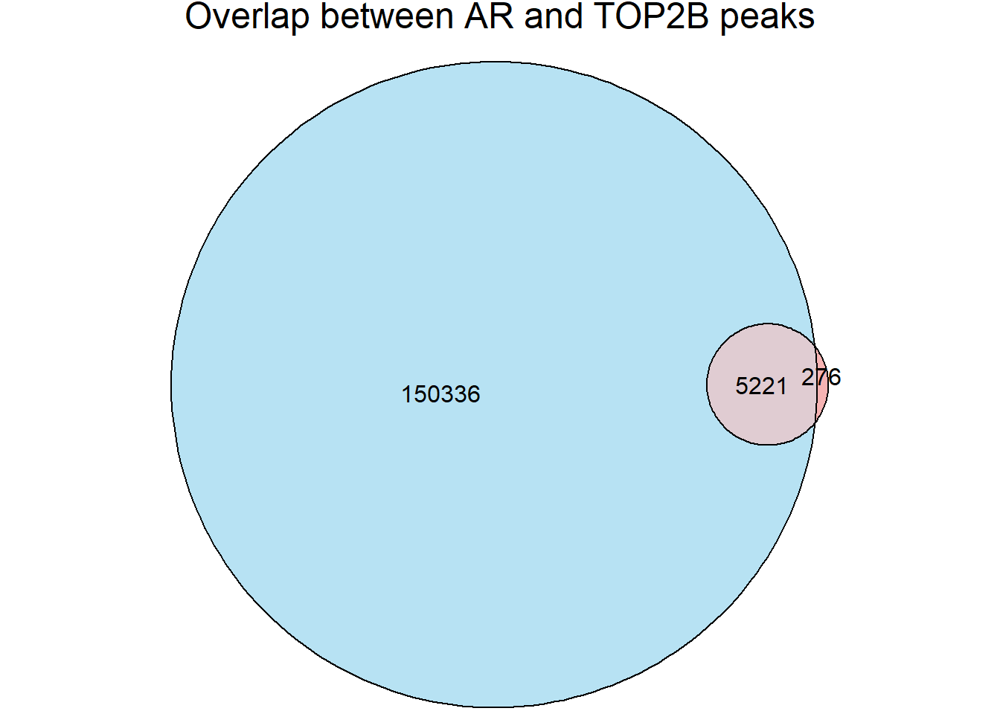
| Version | Author | Date |
|---|---|---|
| d6904a9 | reneeisnowhere | 2025-07-22 |
length(intersect(unique(top2b_overlap$Peakid), unique(all_regions$Peakid))) # should match overlap_n[1] 5221MCF7 data
annotated_regions %>%
group_by(sig_3,MCF7_AR) %>% tally %>%
pivot_wider(., id_cols = sig_3, names_from = MCF7_AR, values_from = n) %>%
column_to_rownames("sig_3") %>%
print() %>%
fisher.test() MCF7AR_peak not_MCF7AR_peak
sig 637 2836
not_sig 27701 124383
Fisher's Exact Test for Count Data
data: .
p-value = 0.8414
alternative hypothesis: true odds ratio is not equal to 1
95 percent confidence interval:
0.9231248 1.1005593
sample estimates:
odds ratio
1.008553 annotated_regions %>%
group_by(sig_24,MCF7_AR) %>% tally %>%
pivot_wider(., id_cols = sig_24, names_from = MCF7_AR, values_from = n) %>%
column_to_rownames("sig_24") %>%
print() %>%
fisher.test() MCF7AR_peak not_MCF7AR_peak
sig 10412 54408
not_sig 17926 72811
Fisher's Exact Test for Count Data
data: .
p-value < 2.2e-16
alternative hypothesis: true odds ratio is not equal to 1
95 percent confidence interval:
0.7568333 0.7983223
sample estimates:
odds ratio
0.7772963 ##### MCF7 hyper
annotated_regions %>%
group_by(sig_3,MCF7_hyper) %>% tally %>%
pivot_wider(., id_cols = sig_3, names_from = MCF7_hyper, values_from = n) %>%
column_to_rownames("sig_3") %>%
print() %>%
fisher.test() MCF7hyper_peak not_MCF7hyper_peak
sig 279 3194
not_sig 8770 143314
Fisher's Exact Test for Count Data
data: .
p-value = 8.031e-08
alternative hypothesis: true odds ratio is not equal to 1
95 percent confidence interval:
1.256096 1.616982
sample estimates:
odds ratio
1.427425 annotated_regions %>%
group_by(sig_24,MCF7_hyper) %>% tally %>%
pivot_wider(., id_cols = sig_24, names_from = MCF7_hyper, values_from = n) %>%
column_to_rownames("sig_24") %>%
print() %>%
fisher.test() MCF7hyper_peak not_MCF7hyper_peak
sig 4611 60209
not_sig 4438 86299
Fisher's Exact Test for Count Data
data: .
p-value < 2.2e-16
alternative hypothesis: true odds ratio is not equal to 1
95 percent confidence interval:
1.426887 1.554163
sample estimates:
odds ratio
1.489159 ##### MCF7 hypo
annotated_regions %>%
group_by(sig_3,MCF7_hypo) %>% tally %>%
pivot_wider(., id_cols = sig_3, names_from = MCF7_hypo, values_from = n) %>%
column_to_rownames("sig_3") %>%
print() %>%
fisher.test() MCF7hypo_peak not_MCF7hypo_peak
sig 62 3411
not_sig 2589 149495
Fisher's Exact Test for Count Data
data: .
p-value = 0.6906
alternative hypothesis: true odds ratio is not equal to 1
95 percent confidence interval:
0.8004609 1.3535069
sample estimates:
odds ratio
1.049577 annotated_regions %>%
group_by(sig_24,MCF7_hypo) %>% tally %>%
pivot_wider(., id_cols = sig_24, names_from = MCF7_hypo, values_from = n) %>%
column_to_rownames("sig_24") %>%
print() %>%
fisher.test() MCF7hypo_peak not_MCF7hypo_peak
sig 1087 63733
not_sig 1564 89173
Fisher's Exact Test for Count Data
data: .
p-value = 0.4869
alternative hypothesis: true odds ratio is not equal to 1
95 percent confidence interval:
0.8985919 1.0520668
sample estimates:
odds ratio
0.9724356 Venns of MCF7 data
# names(MCF7_DARs_hyper) <- paste0("hyper_", seq_along(seqnames(MCF7_DARs_hyper)))
# names(MCF7_DARs_hypo) <- paste0("hypo_", seq_along(seqnames(MCF7_DARs_hypo)))
#### MCF7 and AR
AR_total <- length(unique(all_regions$Peakid))
MCF_AR_total <- length(unique(MCF7_ARsmcf7_1_LO$Peak_ID))-length(unique(MCF7_AR_ol$Peak_ID))
overlap_n <- length(unique(MCF7_AR_ol$Peakid))
fit_mcf7_ar <- euler(c(
"ARs" = AR_total-overlap_n,
"MCF7_AR_1" = MCF_AR_total,
"ARs&MCF7_AR_1" = overlap_n
))
plot(fit_mcf7_ar, fills = list(fill = c("skyblue", "lightcoral"), alpha = 0.6),
labels = FALSE, edges = TRUE, quantities = TRUE,
main = "Overlap between AR and MCF7 AR (sample 1) peaks")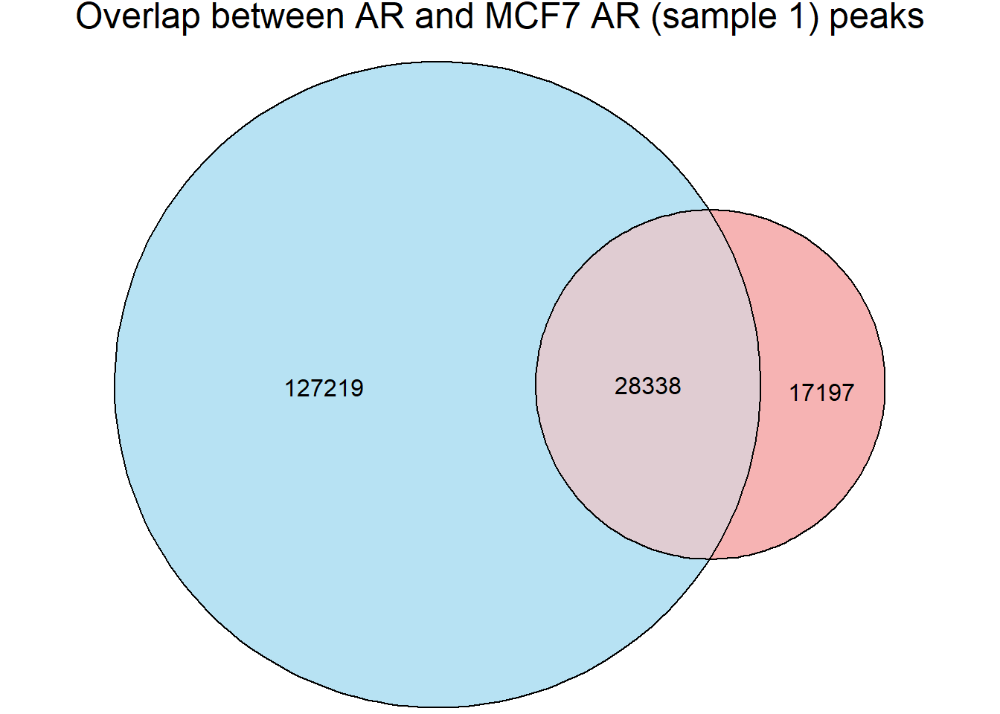
| Version | Author | Date |
|---|---|---|
| d6904a9 | reneeisnowhere | 2025-07-22 |
#### MCF7 hyper
AR_total <- length(unique(all_regions$Peakid))
MCF7_hyper_total <- length(MCF7_DARs_hyper$names)-length(unique(MCF7_hyper_ol$names))
overlap_n <- length(unique(MCF7_hyper_ol$Peakid))
fit_mcf7_hyper <- euler(c(
"ARs" = AR_total-overlap_n,
"MCF7_hyper_total" = MCF7_hyper_total,
"ARs&MCF7_hyper_total" = overlap_n
))
plot(fit_mcf7_hyper, fills = list(fill = c("skyblue", "lightcoral"), alpha = 0.6),
labels = FALSE, edges = TRUE, quantities = TRUE,
main = "Overlap between AR and MCF7 hyper-DARs ")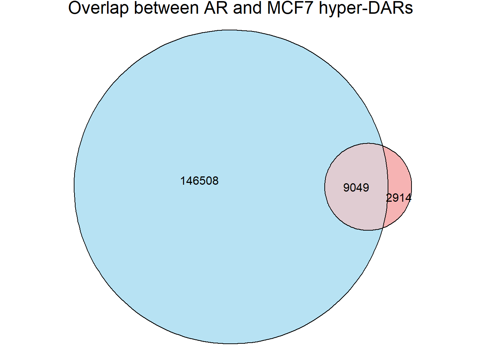
| Version | Author | Date |
|---|---|---|
| d6904a9 | reneeisnowhere | 2025-07-22 |
####MCF7 hypo only
AR_total <- length(unique(all_regions$Peakid))
MCF7_hypo_total <- length(unique(MCF7_DARs_hypo$names))-length(unique(MCF7_hypo_ol$names))
overlap_n <- length(unique(MCF7_hypo_ol$Peakid))
fit_mcf7_hypo <- euler(c(
"ARs" = AR_total-overlap_n,
"MCF7_hypo_total" = MCF7_hypo_total,
"ARs&MCF7_hypo_total" = overlap_n
))
plot(fit_mcf7_hypo, fills = list(fill = c("skyblue", "lightcoral"), alpha = 0.6),
labels = FALSE, edges = TRUE, quantities = TRUE,
main = "Overlap between AR and MCF7 hypo-DARs ")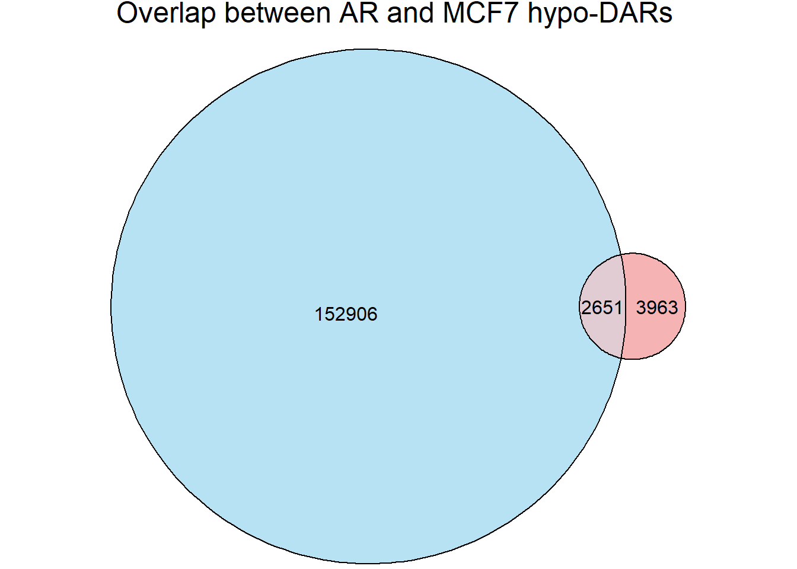
| Version | Author | Date |
|---|---|---|
| d6904a9 | reneeisnowhere | 2025-07-22 |
#### MCF& all dars
AR_total <- length(unique(all_regions$Peakid))
MCF_DAR_total <- MCF7_hypo_total+MCF7_hyper_total
overlap_n_MCF_dar <- length(unique(MCF7_hyper_ol$Peakid))+length(unique(MCF7_hypo_ol$Peakid))
fit_mcf7_all_dar <- euler(c(
"ARs" = AR_total-length(unique(MCF7_hyper_ol$Peakid))+length(unique(MCF7_hypo_ol$Peakid)),
"MCF7_DAR" = MCF_DAR_total,
"ARs&MCF7_DAR" = overlap_n_MCF_dar
))
plot(fit_mcf7_all_dar, fills = list(fill = c("skyblue", "lightcoral"), alpha = 0.6),
labels = FALSE, edges = TRUE, quantities = TRUE,
main = "Overlap between AR and MCF7 DARs")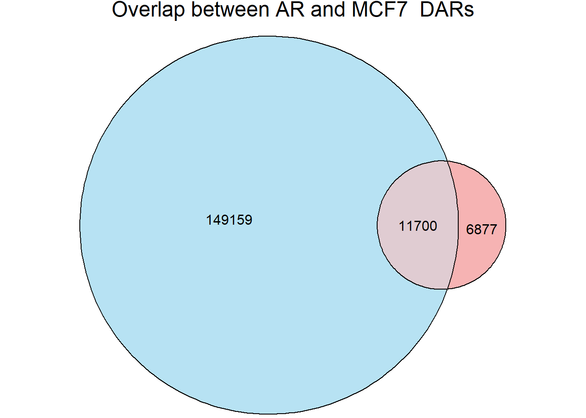
| Version | Author | Date |
|---|---|---|
| d6904a9 | reneeisnowhere | 2025-07-22 |
DOX_DAR_total <- length(unique(DOX_24_sig_gr$Peakid))
MCF7_DAR_total <- length(unique(MCF7_DAR_all$names))-length(unique(DOX_MCF7_DARS_ol$names))
overlap_n_MCF7_dar <- length(unique(DOX_MCF7_DARS_ol$Peakid))
fit_mcf7_all_doxdar <- euler(c(
"DOX_DARs" = DOX_DAR_total-length(unique(DOX_MCF7_DARS_ol$Peakid)),
"MCF7_DAR" = MCF7_DAR_total,
"DOX_DARs&MCF7_DAR" = overlap_n_MCF7_dar
))
plot(fit_mcf7_all_doxdar, fills = list(fill = c("skyblue", "lightcoral"), alpha = 0.6),
labels = FALSE, edges = TRUE, quantities = TRUE,
main = "Overlap between DOX-DARs(24 hours) and MCF7 DARs")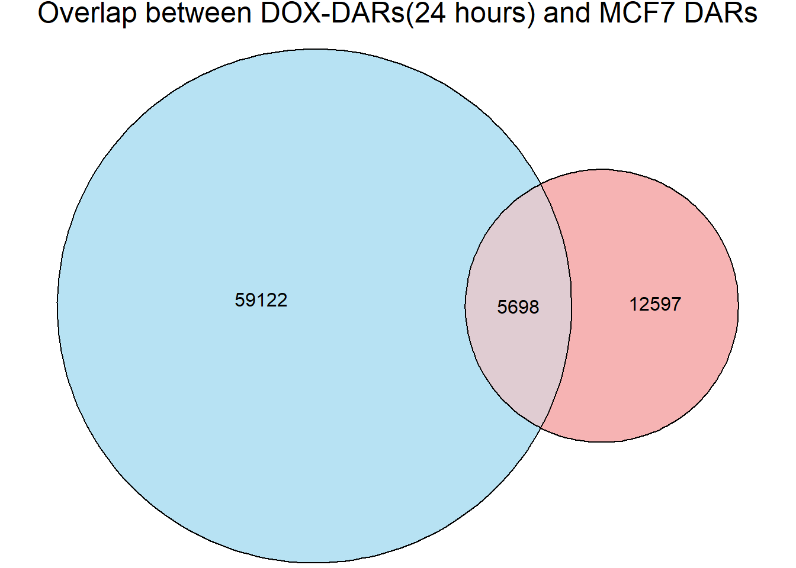
| Version | Author | Date |
|---|---|---|
| d6904a9 | reneeisnowhere | 2025-07-22 |
DOX_MCF7_DARS_ol %>% as.data.frame %>% distinct(Peakid) %>% tally n
1 5698significance of MCF7 data
Are AR overlapping MCF7-ARs greater than expected by chance? (using sample 1,non-resistant MCF7)
# genome <- BSgenome.Hsapiens.UCSC.hg38
# BiocManager::install("BSgenome.Hsapiens.UCSC.hg38.masked")
# combined_gr <- GRangesList(all_regions, MCF7_ARsmcf7_1_LO)
# universe <- GenomicRanges::reduce(combined_gr)
# # Get common chromosomes
# common_chrs <- intersect(seqlevels(MCF7_ARsmcf7_1_LO), seqlevels(all_regions))
#
# Apply pruning to both datasets
# MCF7_ARsmcf7_1_LO <- keepSeqlevels(MCF7_ARsmcf7_1_LO, common_chrs, pruning.mode = "coarse")
# all_regions <- keepSeqlevels(all_regions, common_chrs, pruning.mode = "coarse")
### number of cores used by test. documentation says to use mc.cores=8 (8 is my preference)
# param <- SnowParam(workers = 8)
# perm_test_AR_MCF7AR_combogr <- permTest(A= all_regions,
# B= MCF7_ARsmcf7_1_LO,
# ntimes=1000,
# randomize.function=randomizeRegions,
# evaluate.function = numOverlaps,
# genome="hg38",
# count.once= TRUE,
# universe=universe,
# # universe = union_accessible_regions,
# verbose = TRUE,
# BPPARAM = param)
#
##permtest #2 using universe="union_accessible_regions)
# saveRDS(perm_test_AR_MCF7AR_uni,"data/Final_four_data/re_analysis/perm_test_AR_MCF7AR_uni.RDS")
perm_test_AR_MCF7AR_uni <- readRDS("data/Final_four_data/re_analysis/perm_test_AR_MCF7AR_uni.RDS")
#original permutation test with whole genome
# saveRDS(perm_test_AR_MCF7AR,"data/Final_four_data/re_analysis/perm_test_AR_MCF7AR.RDS")
#using combined_gr <- GRangesList(all_regions, MCF7_ARsmcf7_1)
# universe <- GenomicRanges::reduce(combined_gr) to create a merged universe of ranges from both sets
# saveRDS(perm_test_AR_MCF7AR_combogr,"data/Final_four_data/re_analysis/perm_test_AR_MCF7AR_combogr_100.RDS")
# saveRDS(perm_test_AR_MCF7AR_combogr,"data/Final_four_data/re_analysis/perm_test_AR_MCF7AR_combogr_1000.RDS")
perm_test_AR_MCF7AR_combogr_1000 <- readRDS("data/Final_four_data/re_analysis/perm_test_AR_MCF7AR_combogr_1000.RDS")
perm_test_AR_MCF7AR <- readRDS("data/Final_four_data/re_analysis/perm_test_AR_MCF7AR.RDS")
# perm_test_AR_MCF7AR_combogr
plot(perm_test_AR_MCF7AR_uni)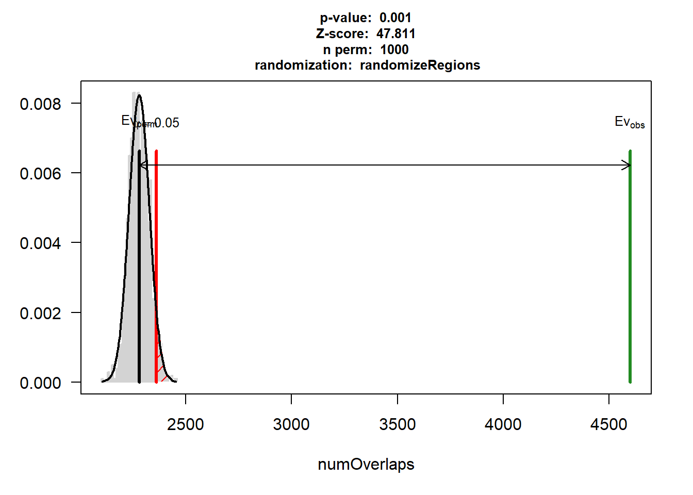
| Version | Author | Date |
|---|---|---|
| d6904a9 | reneeisnowhere | 2025-07-22 |
plot(perm_test_AR_MCF7AR_combogr_1000)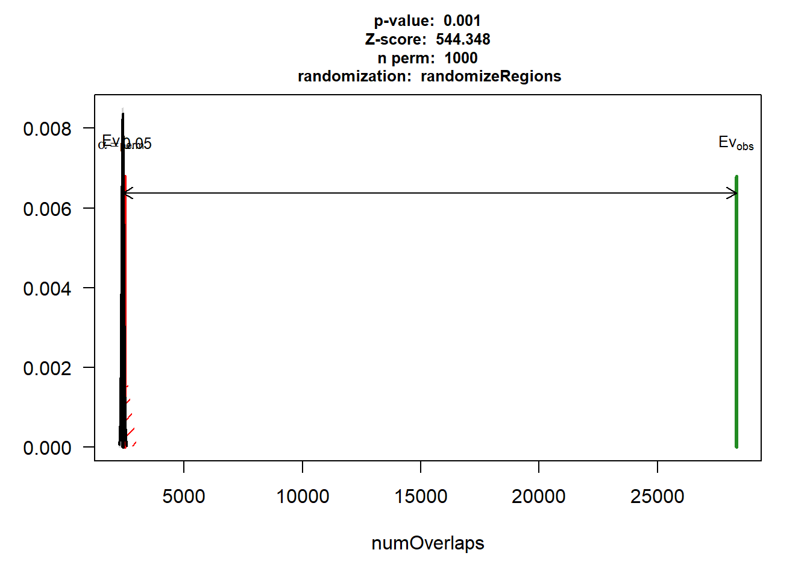
| Version | Author | Date |
|---|---|---|
| d6904a9 | reneeisnowhere | 2025-07-22 |
plot(perm_test_AR_MCF7AR)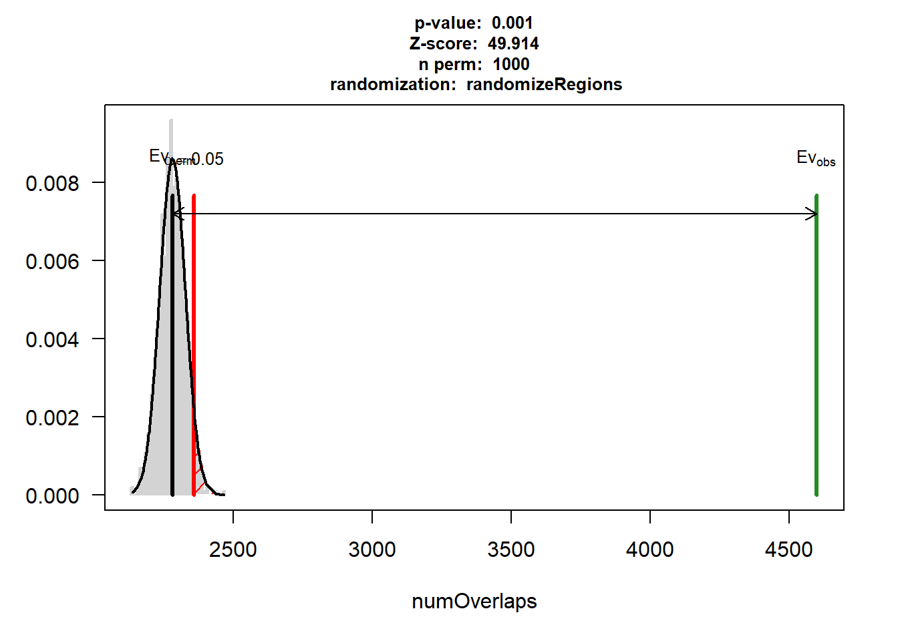
| Version | Author | Date |
|---|---|---|
| d6904a9 | reneeisnowhere | 2025-07-22 |
plot(perm_test_AR_MCF7AR, xlim = range(perm_test_AR_MCF7AR$numOverlaps$permuted))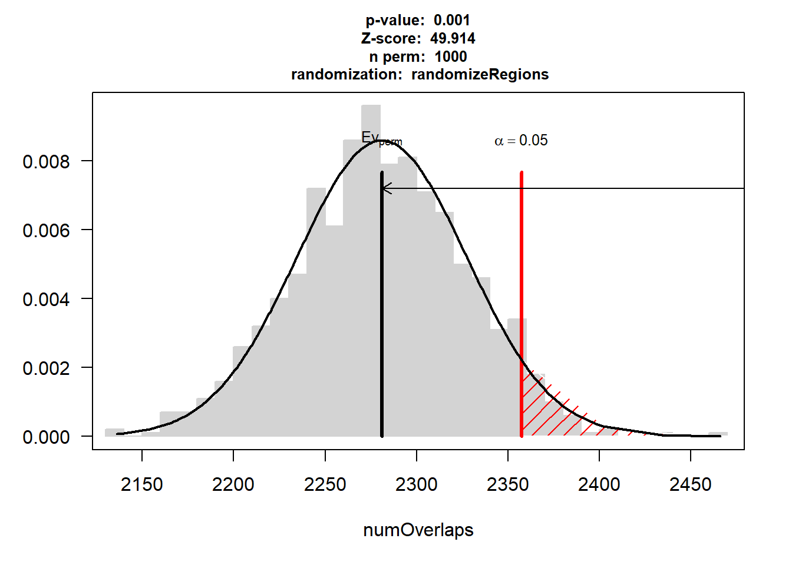
| Version | Author | Date |
|---|---|---|
| d6904a9 | reneeisnowhere | 2025-07-22 |
Are DOX_DARS significantly more likely to overlap MCF7_DARs than chance?
# MCF7_DAR_all <- keepSeqlevels(MCF7_DAR_all, common_chrs, pruning.mode = "coarse")
# all_regions <- keepSeqlevels(all_regions, common_chrs, pruning.mode = "coarse")
#
# perm_test_DAR_MCF7_DAR <- permTest(A= DOX_24_sig_gr,
# B= MCF7_DAR_all,
# ntimes=1000,
# randomize.function=randomizeRegions,
# evaluate.function = numOverlaps,
# genome="hg38",
# count.once= TRUE,
# verbose = TRUE)
# saveRDS(perm_test_DAR_MCF7_DAR,"data/Final_four_data/re_analysis/perm_test_DAR_MCF7_DAR.RDS")
perm_test_DAR_MCF7_DAR <- readRDS("data/Final_four_data/re_analysis/perm_test_DAR_MCF7_DAR.RDS")
perm_test_DAR_MCF7_DAR$numOverlaps
P-value: 0.000999000999000999
Z-score: 201.0915
Number of iterations: 1000
Alternative: greater
Evaluation of the original region set: 5698
Evaluation function: numOverlaps
Randomization function: randomizeRegions
attr(,"class")
[1] "permTestResultsList"plot(perm_test_DAR_MCF7_DAR)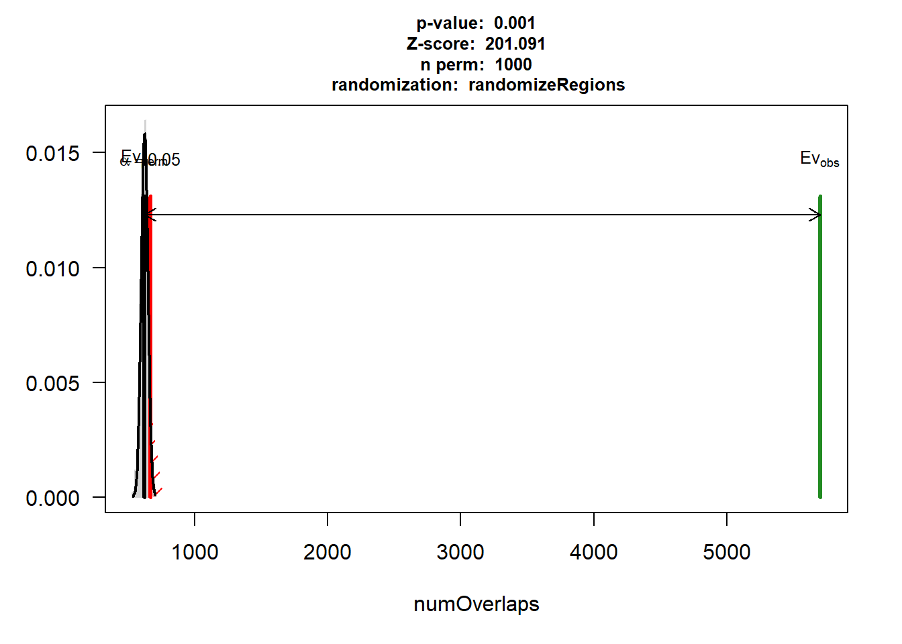
| Version | Author | Date |
|---|---|---|
| d6904a9 | reneeisnowhere | 2025-07-22 |
plot(perm_test_DAR_MCF7_DAR, xlim = range(perm_test_DAR_MCF7_DAR$numOverlaps$permuted))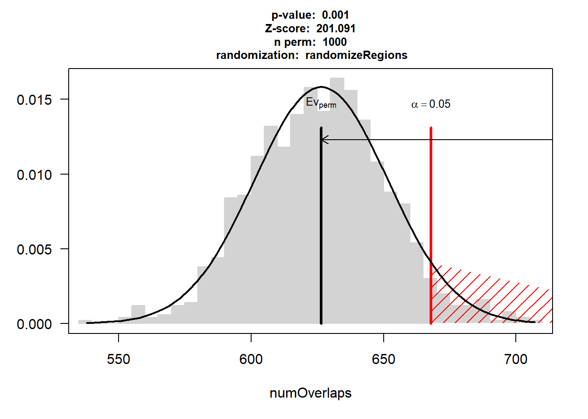
| Version | Author | Date |
|---|---|---|
| d6904a9 | reneeisnowhere | 2025-07-22 |
Calculating Distance to TAD-SNP from peak of MCF7 DAR data
Left_ventricle_TAD <- import(con = "C://Users/renee/Downloads/hg38.TADs/hg38/VentricleLeft_STL003_Leung_2015-raw_TADs.txt", format = "bed",genome="hg38")
mcols(Left_ventricle_TAD)$TAD_id <- paste0("TAD_", seq_along(Left_ventricle_TAD))
Schneider_all_SNPS <- read_delim("data/other_papers/Schneider_all_SNPS.txt",
delim = "\t", escape_double = FALSE,
trim_ws = TRUE)
Schneider_all_SNPS_df <- Schneider_all_SNPS %>%
dplyr::rename("RSID"="#Uploaded_variation") %>%
dplyr::select(RSID,Location,SYMBOL,Gene, SOURCE) %>%
distinct(RSID,Location,SYMBOL,.keep_all = TRUE) %>%
dplyr::rename("Close_SYMBOL"="SYMBOL") %>%
dplyr::filter(!str_starts(Location, "H")) %>%
separate_wider_delim(Location,delim=":",names=c("Chr","Coords")) %>%
separate_wider_delim(Coords,delim= "-", names= c("Start","End")) %>%
mutate(Chr=paste0("chr",Chr)) %>%
group_by(RSID) %>%
reframe(Chr=unique(Chr),
Start=unique(Start),
End=unique(End),
Close_SYMBOL=paste(unique(Close_SYMBOL),collapse=";"),
Gene=paste(Gene,collapse=";"),
SOURCE=paste(SOURCE,collapse=";")
) %>%
GRanges() %>% as.data.frame
schneider_gr <-Schneider_all_SNPS_df%>%
dplyr::select(seqnames,start,end,RSID:SOURCE) %>%
distinct() %>%
GRanges()snp_tad_df <-
join_overlap_inner(schneider_gr, Left_ventricle_TAD) %>%
as_tibble() %>%
dplyr::select(RSID, snp_start = start, snp_chr = seqnames, TAD_id)
MCF7_DAR_tad_df <-
join_overlap_inner(MCF7_DAR_all, Left_ventricle_TAD) %>%
as_tibble() %>%
dplyr::select(names, peak_start = start, peak_chr = seqnames, TAD_id)
MCF7_DAR_snp_pairs <- MCF7_DAR_tad_df %>%
inner_join(snp_tad_df, by = "TAD_id")
MCF7_DAR_snp_pairs_dist <-MCF7_DAR_snp_pairs %>%
mutate(distance = abs(peak_start - snp_start))
saveRDS(MCF7_DAR_snp_pairs_dist,"data/Final_four_data/re_analysis/MCF7_DAR_snp_pairs_dist.RDS")significance of Snyder data (Heart left-ventricle)
Snyder_41peaks <- read.delim("data/other_papers/ENCFF966JZT_bed_Snyder_41peaks.bed",header=TRUE) %>%
GRanges()
genome <- BSgenome.Hsapiens.UCSC.hg38
# perm_test_hlv <- permTest(A= all_regions,
# B= Snyder_41peaks,
# ntimes=1000,
# randomize.function=randomizeRegions,
# evaluate.function = numOverlaps,
# genome=genome,
# count.once= TRUE,
# verbose = TRUE)
# saveRDS(perm_test_hlv,"data/Final_four_data/re_analysis/perm_test_results_HLV.RDS")
perm_test_hlv <- readRDS("data/Final_four_data/re_analysis/perm_test_results_HLV.RDS")
perm_test_hlv$numOverlaps
P-value: 0.000999000999000999
Z-score: 760.9593
Number of iterations: 1000
Alternative: greater
Evaluation of the original region set: 66927
Evaluation function: numOverlaps
Randomization function: randomizeRegions
attr(,"class")
[1] "permTestResultsList"plot(perm_test_hlv)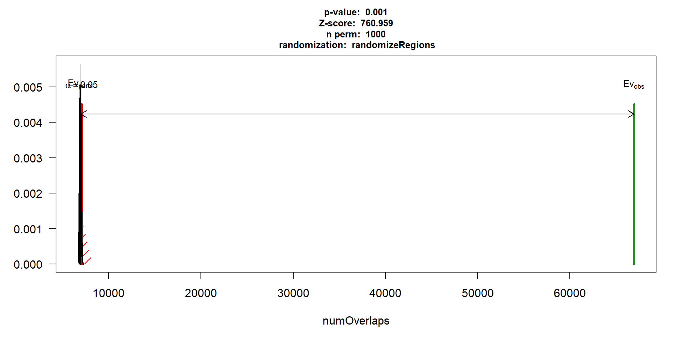
| Version | Author | Date |
|---|---|---|
| d6904a9 | reneeisnowhere | 2025-07-22 |
plot(perm_test_hlv, xlim = range(perm_test_hlv$numOverlaps$permuted))
| Version | Author | Date |
|---|---|---|
| d6904a9 | reneeisnowhere | 2025-07-22 |
TOP2B and TOP2A expression (log2cpm from RNA data)
drug_pal <- c("#8B006D","#DF707E","#F1B72B", "#3386DD","#707031","#41B333")
RNA_counts <- readRDS("data/other_papers/cpmcount.RDS") %>%
dplyr::rename_with(.,~gsub(pattern="Da",replacement="DNR",.)) %>%
dplyr::rename_with(.,~gsub(pattern="Do",replacement="DOX",.)) %>%
dplyr::rename_with(.,~gsub(pattern="Ep",replacement="EPI",.)) %>%
dplyr::rename_with(.,~gsub(pattern="Mi",replacement="MTX",.)) %>%
dplyr::rename_with(.,~gsub(pattern="Tr",replacement="TRZ",.)) %>%
dplyr::rename_with(.,~gsub(pattern="Ve",replacement="VEH",.)) %>%
rownames_to_column("ENTREZID")
RNA_results %>%
dplyr::filter(SYMBOL=="TOP2B")# A tibble: 1 × 12
ENTREZID SYMBOL `24_RNA_DNR` `24_RNA_DOX` `24_RNA_EPI` `24_RNA_MTX`
<chr> <chr> <dbl> <dbl> <dbl> <dbl>
1 7155 TOP2B -0.940 -0.793 -0.936 -0.394
# ℹ 6 more variables: `24_RNA_TRZ` <dbl>, `3_RNA_DNR` <dbl>, `3_RNA_DOX` <dbl>,
# `3_RNA_EPI` <dbl>, `3_RNA_MTX` <dbl>, `3_RNA_TRZ` <dbl>RNA_counts %>%
dplyr::filter(ENTREZID =="7153") %>%
pivot_longer(cols = !ENTREZID, names_to = "sample", values_to = "counts") %>%
separate("sample", into = c("trt","ind","time")) %>%
mutate(time=factor(time, levels = c("3h","24h"))) %>%
mutate(trt=factor(trt, levels= c("DOX","EPI","DNR","MTX","TRZ","VEH"))) %>%
ggplot(., aes (x = time, y=counts))+
geom_boxplot(aes(fill=trt))+
# facet_wrap(~SYMBOL, scales="free_y")+
scale_fill_manual(values = drug_pal)+
ggtitle("RNA Log2cpm of TOP2a")+
theme_bw()+
ylab("log2 cpm RNA")
| Version | Author | Date |
|---|---|---|
| d6904a9 | reneeisnowhere | 2025-07-22 |
RNA_counts %>%
dplyr::filter(ENTREZID =="7155") %>%
pivot_longer(cols = !ENTREZID, names_to = "sample", values_to = "counts") %>%
separate("sample", into = c("trt","ind","time")) %>%
mutate(time=factor(time, levels = c("3h","24h"))) %>%
mutate(trt=factor(trt, levels= c("DOX","EPI","DNR","MTX","TRZ","VEH"))) %>%
ggplot(., aes (x = time, y=counts))+
geom_boxplot(aes(fill=trt))+
# facet_wrap(~SYMBOL, scales="free_y")+
scale_fill_manual(values = drug_pal)+
ggtitle("RNA Log2cpm of TOP2b")+
theme_bw()+
ylab("log2 cpm RNA")
| Version | Author | Date |
|---|---|---|
| d6904a9 | reneeisnowhere | 2025-07-22 |
RNA_counts %>%
dplyr::filter(ENTREZID =="7155") ENTREZID DNR.1.3h DOX.1.3h EPI.1.3h MTX.1.3h TRZ.1.3h VEH.1.3h DNR.1.24h
1 7155 7.688709 7.79886 7.48013 7.639478 7.888072 7.803053 7.174793
DOX.1.24h EPI.1.24h MTX.1.24h TRZ.1.24h VEH.1.24h DNR.2.3h DOX.2.3h EPI.2.3h
1 7.330227 7.14275 7.757345 7.897418 7.923785 7.766519 7.894115 7.61247
MTX.2.3h TRZ.2.3h VEH.2.3h DNR.2.24h DOX.2.24h EPI.2.24h MTX.2.24h TRZ.2.24h
1 7.717206 7.749688 8.03617 6.966839 7.193885 6.393513 7.685986 8.007096
VEH.2.24h DNR.3.3h DOX.3.3h EPI.3.3h MTX.3.3h TRZ.3.3h VEH.3.3h DNR.3.24h
1 7.794628 7.816947 7.83384 7.724013 7.659982 7.640971 7.804263 7.073193
DOX.3.24h EPI.3.24h MTX.3.24h TRZ.3.24h VEH.3.24h DNR.4.3h DOX.4.3h EPI.4.3h
1 7.364928 7.07113 7.684109 8.025287 8.01084 7.770785 7.781132 7.753577
MTX.4.3h TRZ.4.3h VEH.4.3h DNR.4.24h DOX.4.24h EPI.4.24h MTX.4.24h TRZ.4.24h
1 7.70335 7.726805 7.741929 6.896182 6.967413 6.906163 7.625848 7.798075
VEH.4.24h DNR.5.3h DOX.5.3h EPI.5.3h MTX.5.3h TRZ.5.3h VEH.5.3h DNR.5.24h
1 7.779986 7.810176 7.745346 7.43357 7.602742 7.797798 7.702411 7.112686
DOX.5.24h EPI.5.24h MTX.5.24h TRZ.5.24h VEH.5.24h DNR.6.3h DOX.6.3h EPI.6.3h
1 7.173061 7.413412 7.639165 8.116839 8.281319 7.833686 7.927957 7.964606
MTX.6.3h TRZ.6.3h VEH.6.3h DNR.6.24h DOX.6.24h EPI.6.24h MTX.6.24h TRZ.6.24h
1 7.829451 7.919471 7.891501 7.238693 7.186441 7.246875 7.792123 8.400836
VEH.6.24h
1 8.08014RNA_results %>%
dplyr::filter(ENTREZID =="7155")# A tibble: 1 × 12
ENTREZID SYMBOL `24_RNA_DNR` `24_RNA_DOX` `24_RNA_EPI` `24_RNA_MTX`
<chr> <chr> <dbl> <dbl> <dbl> <dbl>
1 7155 TOP2B -0.940 -0.793 -0.936 -0.394
# ℹ 6 more variables: `24_RNA_TRZ` <dbl>, `3_RNA_DNR` <dbl>, `3_RNA_DOX` <dbl>,
# `3_RNA_EPI` <dbl>, `3_RNA_MTX` <dbl>, `3_RNA_TRZ` <dbl>TAD_102_genes <- c("TNFSF18","PRDX6", "TEX50", "KLHL20", "DARS2", "TNFSF4", "SLC9C2", "ANKRD45", "CENPL", "GAS5")
TAD_plot_genes <- RNA_results %>%
dplyr::filter(SYMBOL%in% TAD_102_genes) %>%
dplyr::select(ENTREZID,SYMBOL)
### Filter pvalues
clean_RNA_adj.pvals <- RNA_adj.pvals %>%
# dplyr::filter(ENTREZID=="55157") %>%
pivot_longer(cols = contains("pval"), names_to = "sample", values_to = "adj.p.val") %>%
separate(sample, into = c("trt", "time","pval")) %>%
mutate(
time = paste0(time, "h"), # convert "3" → "3h"
trt = factor(trt, levels = c("DOX", "EPI", "DNR", "MTX", "TRZ", "VEH"))
)
for (gene in TAD_plot_genes$ENTREZID) {
SYMBOL <- TAD_plot_genes$SYMBOL[TAD_plot_genes$ENTREZID == gene]
# Filter and plot
gene_plot <- RNA_counts %>%
filter(ENTREZID == gene) %>%
pivot_longer(cols = !ENTREZID, names_to = "sample", values_to = "counts") %>%
separate(sample, into = c("trt", "ind", "time")) %>%
mutate(
time = factor(time, levels = c("3h", "24h")),
trt = factor(trt, levels = c("DOX", "EPI", "DNR", "MTX", "TRZ", "VEH"))
) %>%
ggplot(aes(x = time, y = counts)) +
geom_boxplot(aes(fill = trt)) +
scale_fill_manual(values = drug_pal) +
theme_bw() +
ylab("log2 cpm RNA") +
ggtitle(paste0("RNA Log2cpm of ", SYMBOL))
plot(gene_plot)
}
| Version | Author | Date |
|---|---|---|
| d6904a9 | reneeisnowhere | 2025-07-22 |

| Version | Author | Date |
|---|---|---|
| d6904a9 | reneeisnowhere | 2025-07-22 |

| Version | Author | Date |
|---|---|---|
| d6904a9 | reneeisnowhere | 2025-07-22 |

| Version | Author | Date |
|---|---|---|
| d6904a9 | reneeisnowhere | 2025-07-22 |

| Version | Author | Date |
|---|---|---|
| d6904a9 | reneeisnowhere | 2025-07-22 |

| Version | Author | Date |
|---|---|---|
| d6904a9 | reneeisnowhere | 2025-07-22 |

| Version | Author | Date |
|---|---|---|
| d6904a9 | reneeisnowhere | 2025-07-22 |
RNA_pval_clean <- RNA_adj.pvals %>%
pivot_longer(cols = contains("pval"), names_to = "sample", values_to = "adj.p.val") %>%
separate(sample, into = c("trt", "time","pval")) %>%
mutate(
time = paste0(time, "h"), # convert "3" → "3h"
trt = factor(trt, levels = c("DOX", "EPI", "DNR", "MTX", "TRZ", "VEH")),
group = paste0(trt, "_", time),
group = factor(group, levels = c(
"DOX_3h", "EPI_3h", "DNR_3h", "MTX_3h", "TRZ_3h", "VEH_3h",
"DOX_24h", "EPI_24h", "DNR_24h", "MTX_24h", "TRZ_24h", "VEH_24h"
))
)
for (gene in TAD_plot_genes$ENTREZID) {
SYMBOL <- TAD_plot_genes$SYMBOL[TAD_plot_genes$ENTREZID == gene]
# Prep expression data
gene_expr <- RNA_counts %>%
filter(ENTREZID == gene) %>%
pivot_longer(cols = !ENTREZID, names_to = "sample", values_to = "counts") %>%
separate(sample, into = c("trt", "ind", "time")) %>%
mutate(
time = paste0(time), # if already "3h"/"24h"
group = paste0(trt, "_", time),
group = factor(group, levels = c(
"DOX_3h", "EPI_3h", "DNR_3h", "MTX_3h", "TRZ_3h", "VEH_3h",
"DOX_24h", "EPI_24h", "DNR_24h", "MTX_24h", "TRZ_24h", "VEH_24h"
))
)
# Get gene-specific p-values
gene_pvals <- RNA_pval_clean %>%
filter(ENTREZID == gene)
# Merge in p-values by group
gene_plot_data <- left_join(gene_expr, gene_pvals, by = c("ENTREZID", "group"))
# Create label position below box
label_positions <- gene_plot_data %>%
group_by(group) %>%
summarise(y = min(counts, na.rm = TRUE) - 0.5, .groups = "drop")
gene_plot_data <- left_join(gene_plot_data, label_positions, by = "group")
gene_plot_data <- gene_plot_data %>%
separate(group, into = c("trt", "time"), sep = "_", remove = FALSE)
# Plot
gene_plot <- ggplot(gene_plot_data, aes(x = group, y = counts)) +
geom_boxplot(aes(fill = trt)) +
geom_text(
aes(y = y,
label = ifelse(trt != "VEH" & !is.na(adj.p.val),
paste0("", signif(adj.p.val, 2)),
"")),
size = 3,
vjust = 1.2
) +
scale_fill_manual(values = drug_pal) +
theme_bw() +
ggtitle(paste0("RNA Log2cpm of ", SYMBOL)) +
ylab("log2 cpm RNA") +
theme(axis.text.x = element_text(angle = 45, hjust = 1))
plot(gene_plot)
}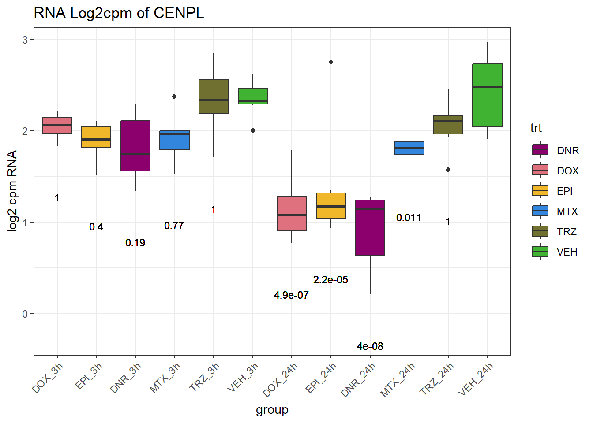
| Version | Author | Date |
|---|---|---|
| d6904a9 | reneeisnowhere | 2025-07-22 |

| Version | Author | Date |
|---|---|---|
| d6904a9 | reneeisnowhere | 2025-07-22 |
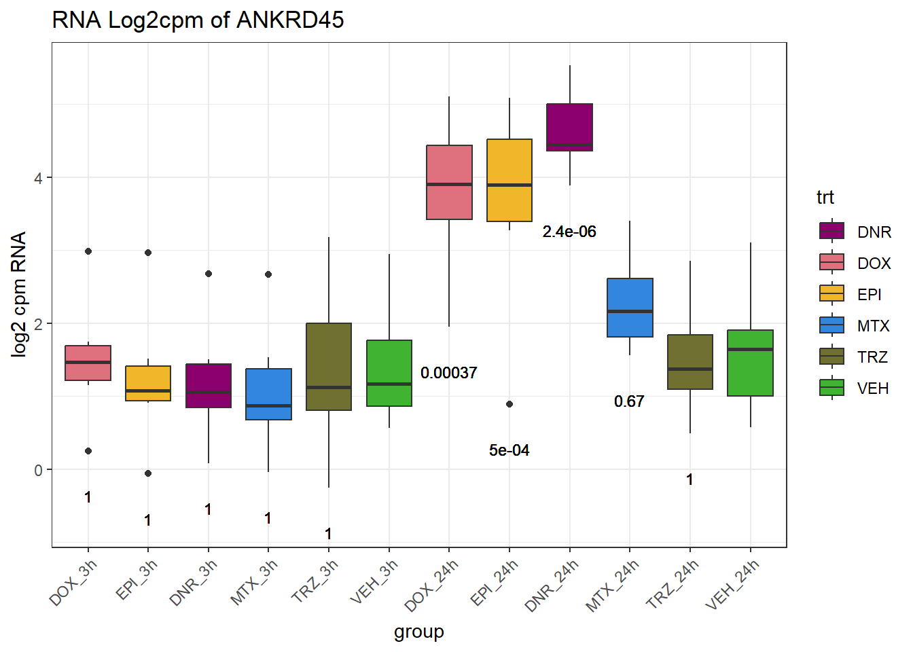
| Version | Author | Date |
|---|---|---|
| d6904a9 | reneeisnowhere | 2025-07-22 |

| Version | Author | Date |
|---|---|---|
| d6904a9 | reneeisnowhere | 2025-07-22 |

| Version | Author | Date |
|---|---|---|
| d6904a9 | reneeisnowhere | 2025-07-22 |
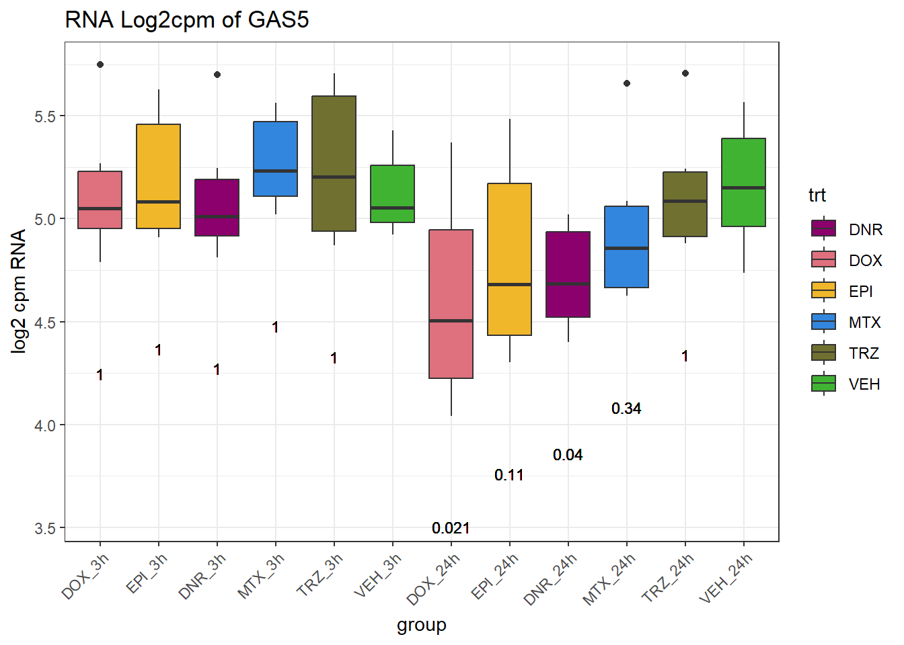
| Version | Author | Date |
|---|---|---|
| d6904a9 | reneeisnowhere | 2025-07-22 |
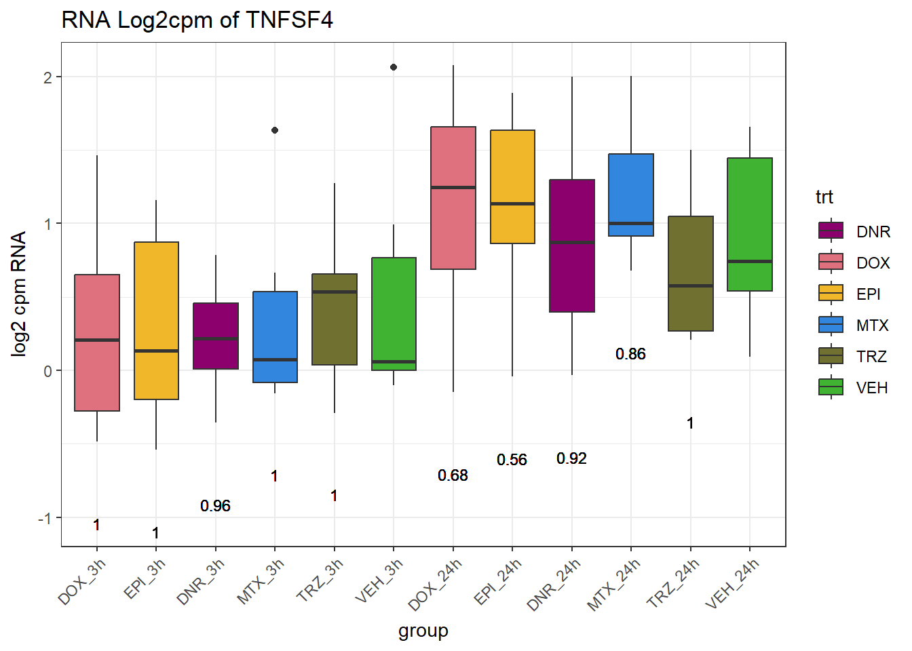
| Version | Author | Date |
|---|---|---|
| d6904a9 | reneeisnowhere | 2025-07-22 |
sessionInfo()R version 4.4.2 (2024-10-31 ucrt)
Platform: x86_64-w64-mingw32/x64
Running under: Windows 11 x64 (build 26100)
Matrix products: default
locale:
[1] LC_COLLATE=English_United States.utf8
[2] LC_CTYPE=English_United States.utf8
[3] LC_MONETARY=English_United States.utf8
[4] LC_NUMERIC=C
[5] LC_TIME=English_United States.utf8
time zone: America/Chicago
tzcode source: internal
attached base packages:
[1] grid stats4 stats graphics grDevices utils datasets
[8] methods base
other attached packages:
[1] BSgenome.Hsapiens.UCSC.hg38_1.4.5
[2] BSgenome_1.74.0
[3] BiocIO_1.16.0
[4] Biostrings_2.74.1
[5] XVector_0.46.0
[6] liftOver_1.30.0
[7] Homo.sapiens_1.3.1
[8] TxDb.Hsapiens.UCSC.hg19.knownGene_3.2.2
[9] GO.db_3.20.0
[10] OrganismDbi_1.48.0
[11] gwascat_2.38.0
[12] regioneR_1.38.0
[13] readxl_1.4.5
[14] circlize_0.4.16
[15] epitools_0.5-10.1
[16] ggrepel_0.9.6
[17] plyranges_1.26.0
[18] ggsignif_0.6.4
[19] genomation_1.38.0
[20] smplot2_0.2.5
[21] eulerr_7.0.2
[22] biomaRt_2.62.1
[23] devtools_2.4.5
[24] usethis_3.1.0
[25] ggpubr_0.6.1
[26] BiocParallel_1.40.2
[27] scales_1.4.0
[28] VennDiagram_1.7.3
[29] futile.logger_1.4.3
[30] gridExtra_2.3
[31] ggfortify_0.4.18
[32] edgeR_4.4.2
[33] limma_3.62.2
[34] rtracklayer_1.66.0
[35] org.Hs.eg.db_3.20.0
[36] TxDb.Hsapiens.UCSC.hg38.knownGene_3.20.0
[37] GenomicFeatures_1.58.0
[38] AnnotationDbi_1.68.0
[39] Biobase_2.66.0
[40] GenomicRanges_1.58.0
[41] GenomeInfoDb_1.42.3
[42] IRanges_2.40.1
[43] S4Vectors_0.44.0
[44] BiocGenerics_0.52.0
[45] ChIPseeker_1.42.1
[46] RColorBrewer_1.1-3
[47] broom_1.0.8
[48] kableExtra_1.4.0
[49] lubridate_1.9.4
[50] forcats_1.0.0
[51] stringr_1.5.1
[52] dplyr_1.1.4
[53] purrr_1.0.4
[54] readr_2.1.5
[55] tidyr_1.3.1
[56] tibble_3.3.0
[57] ggplot2_3.5.2
[58] tidyverse_2.0.0
[59] workflowr_1.7.1
loaded via a namespace (and not attached):
[1] R.methodsS3_1.8.2 dichromat_2.0-0.1
[3] vroom_1.6.5 progress_1.2.3
[5] urlchecker_1.0.1 nnet_7.3-20
[7] vctrs_0.6.5 ggtangle_0.0.7
[9] digest_0.6.37 png_0.1-8
[11] shape_1.4.6.1 git2r_0.36.2
[13] reshape2_1.4.4 httpuv_1.6.16
[15] qvalue_2.38.0 withr_3.0.2
[17] xfun_0.52 ggfun_0.1.9
[19] ellipsis_0.3.2 survival_3.8-3
[21] memoise_2.0.1 profvis_0.4.0
[23] systemfonts_1.2.3 tidytree_0.4.6
[25] zoo_1.8-14 GlobalOptions_0.1.2
[27] gtools_3.9.5 R.oo_1.27.1
[29] Formula_1.2-5 prettyunits_1.2.0
[31] KEGGREST_1.46.0 promises_1.3.3
[33] httr_1.4.7 rstatix_0.7.2
[35] restfulr_0.0.16 ps_1.9.1
[37] rstudioapi_0.17.1 UCSC.utils_1.2.0
[39] miniUI_0.1.2 generics_0.1.4
[41] DOSE_4.0.1 base64enc_0.1-3
[43] processx_3.8.6 curl_6.4.0
[45] zlibbioc_1.52.0 polylabelr_0.3.0
[47] polyclip_1.10-7 GenomeInfoDbData_1.2.13
[49] SparseArray_1.6.2 RBGL_1.82.0
[51] xtable_1.8-4 evaluate_1.0.4
[53] S4Arrays_1.6.0 BiocFileCache_2.14.0
[55] hms_1.1.3 colorspace_2.1-1
[57] filelock_1.0.3 magrittr_2.0.3
[59] later_1.4.2 ggtree_3.14.0
[61] lattice_0.22-7 getPass_0.2-4
[63] XML_3.99-0.18 cowplot_1.1.3
[65] matrixStats_1.5.0 Hmisc_5.2-3
[67] pillar_1.11.0 nlme_3.1-168
[69] gridBase_0.4-7 caTools_1.18.3
[71] compiler_4.4.2 stringi_1.8.7
[73] SummarizedExperiment_1.36.0 GenomicAlignments_1.42.0
[75] plyr_1.8.9 crayon_1.5.3
[77] abind_1.4-8 gridGraphics_0.5-1
[79] locfit_1.5-9.12 bit_4.6.0
[81] fastmatch_1.1-6 whisker_0.4.1
[83] codetools_0.2-20 textshaping_1.0.1
[85] bslib_0.9.0 mime_0.13
[87] splines_4.4.2 Rcpp_1.1.0
[89] dbplyr_2.5.0 cellranger_1.1.0
[91] knitr_1.50 blob_1.2.4
[93] utf8_1.2.6 fs_1.6.6
[95] checkmate_2.3.2 pkgbuild_1.4.8
[97] ggplotify_0.1.2 Matrix_1.7-3
[99] callr_3.7.6 statmod_1.5.0
[101] tzdb_0.5.0 svglite_2.2.1
[103] pkgconfig_2.0.3 tools_4.4.2
[105] cachem_1.1.0 RSQLite_2.4.1
[107] viridisLite_0.4.2 DBI_1.2.3
[109] impute_1.80.0 fastmap_1.2.0
[111] rmarkdown_2.29 Rsamtools_2.22.0
[113] sass_0.4.10 patchwork_1.3.1
[115] BiocManager_1.30.26 VariantAnnotation_1.52.0
[117] graph_1.84.1 carData_3.0-5
[119] rpart_4.1.24 farver_2.1.2
[121] yaml_2.3.10 MatrixGenerics_1.18.1
[123] foreign_0.8-90 cli_3.6.5
[125] txdbmaker_1.2.1 lifecycle_1.0.4
[127] lambda.r_1.2.4 sessioninfo_1.2.3
[129] backports_1.5.0 timechange_0.3.0
[131] gtable_0.3.6 rjson_0.2.23
[133] parallel_4.4.2 ape_5.8-1
[135] jsonlite_2.0.0 bitops_1.0-9
[137] bit64_4.6.0-1 pwr_1.3-0
[139] yulab.utils_0.2.0 futile.options_1.0.1
[141] jquerylib_0.1.4 GOSemSim_2.32.0
[143] R.utils_2.13.0 snpStats_1.56.0
[145] lazyeval_0.2.2 shiny_1.11.1
[147] htmltools_0.5.8.1 enrichplot_1.26.6
[149] rappdirs_0.3.3 formatR_1.14
[151] glue_1.8.0 httr2_1.1.2
[153] RCurl_1.98-1.17 rprojroot_2.0.4
[155] treeio_1.30.0 boot_1.3-31
[157] igraph_2.1.4 R6_2.6.1
[159] gplots_3.2.0 labeling_0.4.3
[161] cluster_2.1.8.1 pkgload_1.4.0
[163] aplot_0.2.8 DelayedArray_0.32.0
[165] tidyselect_1.2.1 plotrix_3.8-4
[167] htmlTable_2.4.3 xml2_1.3.8
[169] car_3.1-3 seqPattern_1.38.0
[171] KernSmooth_2.23-26 data.table_1.17.6
[173] htmlwidgets_1.6.4 fgsea_1.32.4
[175] rlang_1.1.6 remotes_2.5.0